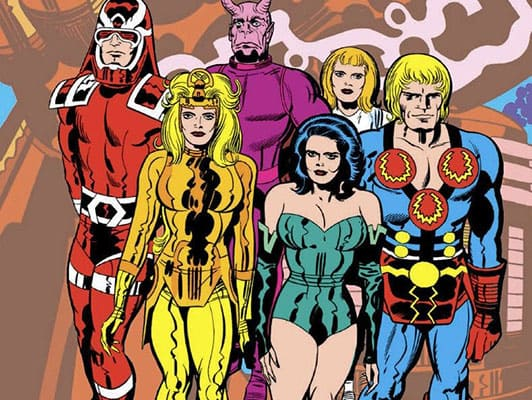

Nuevo Lanzamiento: "La Saga de los Eternos"
Los Eternos son una raza ficticia de humanoides que aparecen en los cómics estadounidenses publicados por Marvel Comics. Fueron creados por Jack Kirby e hicieron su primera aparición en The Eternals # 1 (julio de 1976).
En el Universo Marvel, los Eternos son una rama de la humanidad conocida como Homo inmortalis, creada hace un millón de años por los enigmáticos alienígenas Celestiales para defender la Tierra con sus poderes y habilidades sobrehumanos. Sus principales adversarios son los Deviantes, que comparten un origen similar y representan una amenaza regular para la humanidad. Debido a su inmortalidad virtual, los Eternos se han aislado en gran medida de los humanos, con su estado de dios formando la base de varias figuras mitológicas alrededor del mundo.